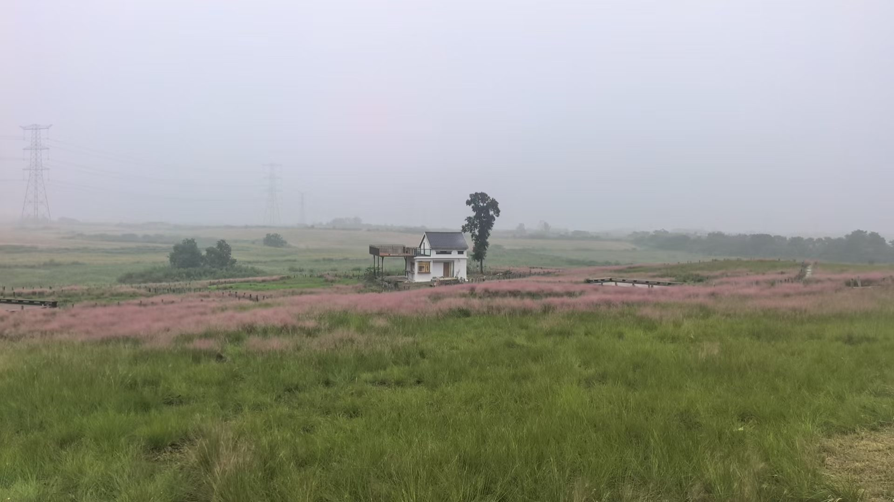
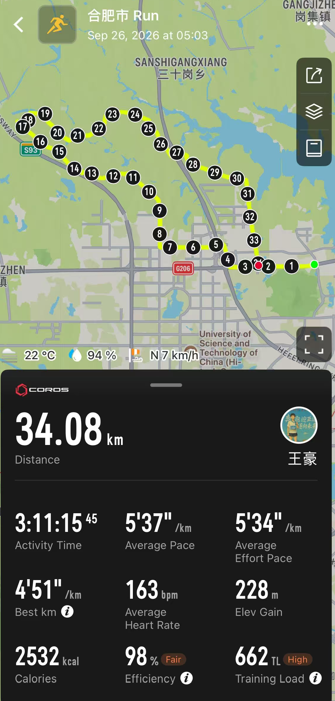
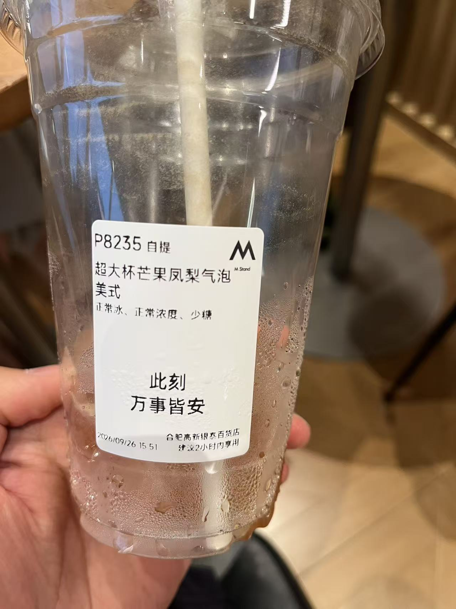

LIFE / HOLIDAY RUN
假期第二天：
跑进雨里，也跑回生活

假期第二天，按计划是跑步、读书的一天。
一场没有完成的 35 公里
今天想跑个长距离，看看自己的状态。凌晨 4 点 20 分闹钟响起——昨晚睡得太晚，1 点 20 分才睡，满打满算只有三个小时。挣扎着起床，随口吃了点面包，4 点 50 分准时出发。
今天的目标是 35 公里：从大蜀山出发，绕小岭南一圈。5 点到达半边街停车场，开跑。
天还完全黑着，街上已经有不少行人和车辆。昨晚没睡好，一开跑心率就高得离谱：6 分 10 秒的配速，心率 160，菜得要命。
跑步时，我喜欢一个人胡思乱想。最近常带着老婆和王牧熙一起看越野跑视频，目标是把他们也带进坑里，哈哈。姚妙、向付召、赵家驹、蒙光富……自然的美景，精英选手跑步时的灵动，还有他们的狼狈、痛苦与快乐，都很吸引人。
姚妙是我一直很喜欢的越野女运动员。我的性格其实挺适合跑步：向内求，也喜欢靠独处恢复能量。所以听到很多精英运动员的想法时，总觉得和自己很像——姑且蹭个高度。
姚妙说，她曾有一段时间把跑步当成生活的全部，也很长时间“不知道自己是谁”。即使有了家庭，也很难从跑步中抽离。尤其在 2018 年的巅峰期，身体透支让成绩一落千丈。后来，她慢慢开始关注自己的感受，探索跑步之外的事情：陶艺、画画……不再只期待自己未来能取得多大的成绩。
赵家驹则是另一派。他的主项是长距离，最出圈的是今年 9 月的 TORX 巨人之旅：330 公里，65 小时 55 分夺冠，比此前纪录快了一个多小时。冲线后，他却直言“生不如死”。为什么要主动追求痛苦？大概是因为，痛苦能让人更清楚地感受身体，触碰自己的极限，然后变得更强大。
我听说精英运动员跑完步最疼的是牙。现在我已经坐在咖啡馆里了，牙一点都不疼，作业也没完成。
一开始沿着大路跑，后来慢慢进入乡道。天一点点亮起来，远处薄雾蒙蒙，是很舒服的天气。
10 公里后，身体终于慢慢跑开，配速进入 5 分 10 秒，心率还是 160—165。风景也开始漂亮起来，终于有了些越野的感觉。
现在回想起来，剩下的路差不多就是：
- 好多岔路；
- 几只随时会冲出来的狗；
- 雾蒙蒙的前方，有点《致命弯道》的感觉；
- 不断地上坡、下坡；
- 夏训没练好的有氧；
- 浑身湿透的自己。
到了 28 公里，雨开始落下来。先是毛毛雨，后来变成瓢泼大雨。跑到 34 公里，牙还没咬，大脑先告诉我：不行了。于是，我牙也没咬就停了下来。

34.08 公里。离目标只差一点，身体却已经给出了答案。夏训真的荒废了，比去年差了不少。第一场比赛在 11 月 1 日，我不能允许自己今年没有进步。接下来，要更刻苦地训练了。
大雨里的家庭 KTV
雨越下越大。我骑着共享单车回到停车场，换好衣服，去接老婆和王牧熙。刻苦的他们一早就去练小提琴了。半个小时后，我们买了最喜欢的包子、撒汤和油条，开车回家。
刚上车，雨势又大了起来。天气灰蒙蒙的，雨滴打在车上，成了很舒服的白噪音。这个时候最适合听歌，一家人立刻开启 KTV 模式：“那女孩对我说，说我保护她的梦……”
来都来了，就去 M Stand
回到家休息了一会儿，感觉有点无聊。儿子一直听“二战”，于是我们决定换个环境：一家人骑着小牛，穿上雨衣去 M Stand。
在家看，外面明明只是毛毛雨；真正骑上车才发现，雨大得让我想起依萍去陆家要钱的那天。雨水不停地打在我的雨衣上、脸上和鞋上，也同时打在我老婆“是不是一定要去 M Stand”的信心上。
不过，来都来了。不管怎么样，硬着头皮走吧。颠沛流离了一阵，我们终于到了银泰。
到了 M Stand，我的鞋、儿子的裤子、老婆的裤子全都湿透了。幸亏店里人不多，虽然常坐的位置被占了，我们还是在旁边找到了位子，坐下来开始工作。

两杯咖啡的快乐。此刻，万事皆安。一直学习到晚上 7 点半，我们才收好东西。一家人去吃了海底捞，为这场从凌晨四点多开始的假期第二天收尾。
35 公里的作业没有完成，但这一天倒是过得很满：跑进了雨里，也跑回了生活。